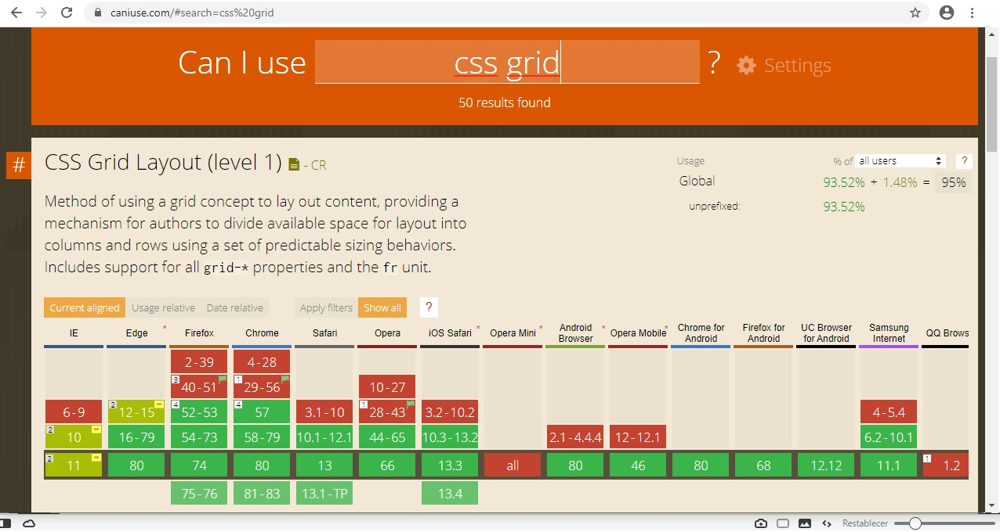

This is a tutorial on depreciated code - When a code becomes redundant because they are replaced by more modern techniques.
So far we have learnt how to create websites using things such as float to place containers on the webpage.
In the past few years there are new methods to solve some of the placement errors using float.
METHOD 1 is called CSS grid and is usefull for responsive websites that can work on a mobile, pad or desktop.
One thing about updates is that we need to ensure that all browsers can support these new methods. For example CSS grid.
To check if a browser is compatible with a new coding method we can use the website: www.caniuse.com
This website tells us if it can be used and what version of the browser supports it.
METHOD 2 is called flexbox which allows us to position something horizontally and vertically inside the browser and is much better than using float.